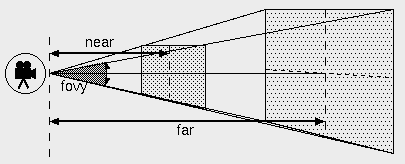
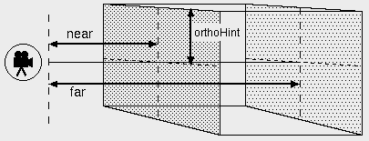
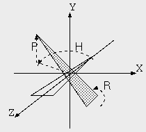

| vfr - Volflex rendering API - |
class vfrCamera3D
Header files
- #include "vfrCamera3D.h"
- vfrCamera3D(const Bool mode = FALSE)
- デフォルト設定のvfrCamera3Dオブジェクトをインスタンスする。
- mode 自己破壊モード
- virtual ~vfrCamera3D()
- vfrCamera3Dオブジェクトを破壊する。
public methods / variables
- void setProjection(const ProjectType pm)
- プロジェクションモードを設定する
- pm プロジェクションモード(初期値: PR_PERSPECTIVE)
- ProjectType getProjection() const
- プロジェクションモードを返す
- Bool sweepZoom(const Point2 p0, const Point2 p1)
- 指定された2点を対角線とする矩形領域が視界全体になるようにズームする
プロジェクションモードが
PR_PERSPECTIVEの場合は、矩形領域が視界中央に位置するように平行移動する
- p0 矩形領域の頂点
- p1 矩形領域の頂点
- void setHpr(const float h, const float p, const float r)
- HPR(Head, Pitch, Roll)によるカメラの方向指定を行う
- h Head(radian)
- p Pitch(radian)
- r Roll(radian)
- void setHprDeg(const float dh, const float dp, const float dr)
- HPR(Head, Pitch, Roll)によるカメラの方向指定を行う(Degree指定)
- dh Head(degree)
- dp Pitch(degree)
- dr Roll(degree)
Description
vfrCamera3Dクラスは、3次元の幾何変換機能を実装したカメラのクラスである。
実質的な機能は、vfrCameraクラスで実装されている。
vfrCamera3Dクラスは、透視投影と直交投影の両方をサポートしている。
Perspective Projection
プロジェクションモードにPR_PERSPECTIVEが指定されると、
vfrCamera3Dクラスは透視投影を行う。
透視投影では、視界パラメータに応じて、
以下のような視体積を生成する。

Fig.1 Perspective Projection
Fig.1において、視点からの距離が near および far のクリップ面で切り取られた
錐台の内部が視体積になり、この内部に含まれる物体だけがレンダリングされる。
天地(上下)の視野角は fovy で指定し、
左右の視野角は表示領域のアスペクト比により自動的に決定される。
Orthogonal Projection
プロジェクションモードにPR_ORTHOGONALが指定されると、
vfrCamera3Dクラスは直交投影を行う。
直交投影では、視界パラメータに応じて、
以下のような視体積を生成する。

Fig.2 Orthogonal Projection
Fig.2において、視点からの距離が near および far のクリップ面で切り取られた
直方体の内部が視体積になり、この内部に含まれる物体だけがレンダリングされる。
HPR Posture
HPR指定では、
与えられた h(head), p(pitch), r(roll) から以下の行列を生成し、
回転の幾何変換行列に設定する。
M = ROT(-r,Z) × ROT(-p,X) × ROT(-h,Y)
ここで、ROT(a,Z)はZ軸回りにaだけ回転させる行列を意味する。

Fig.3 HPR Posture
尚、HPR指定を行っても、カメラの位置は変更されない。